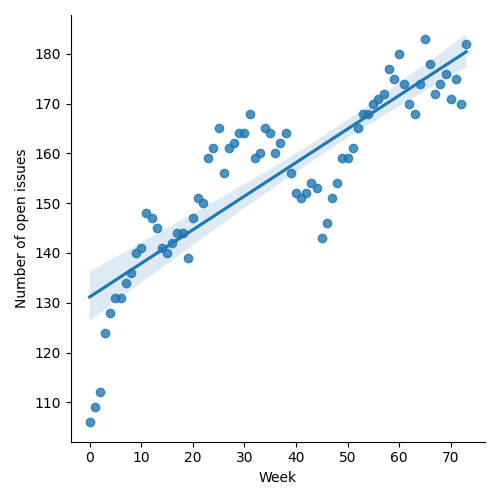
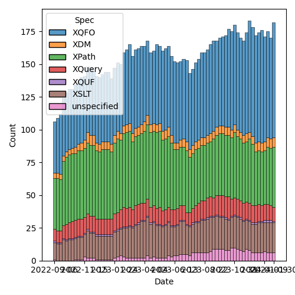
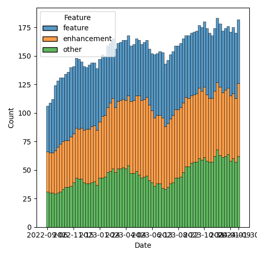

QT4 CG Meeting 064 Minutes 2024-02-06
Table of Contents
- Minutes
- Summary of new and continuing actions
[0/18] - 1. Administrivia
- 2. Technical Agenda
- 2.1. PR #993: 989 (partial) Allow char() to take integer argument
- 2.2. PR #984: 959-partial Add fn:seconds function
- 2.3. PR #975: 973 fn:parse-json, fn:json-to-xml: number-parser, fallback
- 2.4. PR #969: 843-partial Standard, array & map functions: Equivalencies
- 2.5. PR #968: 260 array:index-of
- 2.6. PR #943: 187 Add FLWOR expression while clause
- 2.7. PR #795: 655 fn:sort-with
- 3. Any other business
- 4. Adjourned
Meeting index / QT4CG.org / Dashboard / GH Issues / GH Pull Requests
Minutes
Approved at meeting 065 on 13 February 2024.
Summary of new and continuing actions [0/18]
[ ]QT4CG-052-02: NW to consider how to schedule an “editor’s meeting”[ ]QT4CG-056-04: MK to write a proposal for adding a select attribute to xsl:text[ ]QT4CG-058-02: MK to consider providing more advice about the pitfalls of mixing decimal and double when sorting[ ]QT4CG-062-03: JK to revise the fn:hash function along the lines discussed at the meeting[ ]QT4CG-063-01: MK to revise #956 especially with respect to the options parameter[ ]QT4CG-063-02: JK to consider whether the roman numeral example is appropriate for the spec.[ ]QT4CG-063-03: DN to address the editorial remarks from meeting 063 in a new PR.[ ]QT4CG-063-04: NW to try to add test review to the editorial meeting.[ ]QT4CG-063-05: MK to revise PR #953 to take account of CG’s comments[ ]QT4CG-063-06: MK to consider refactoring the declare item type syntax to something like declare record[ ]QT4CG-064-01: MK to remove “#…” and “#x…” arguments fromfn:char[ ]QT4CG-064-02: CG to update the fallback function to use the newcharargument.[ ]QT4CG-064-03: CG to add examples to show how JSON parsing changes are useful.[ ]QT4CG-064-04: CG to change the return type offallbacktoxs:untypedAtomic?[ ]QT4CG-064-05: CG to amend the names in the keys-where example to be more inclusive[ ]QT4CG-064-06: Add akeys-whereexample that uses the value in a more interesting way.[ ]QT4CG-064-07: CG to add anarray:index-ofexample that uses a collation[ ]QT4CG-064-08: NW to open an issue to try to resolve $search to $target consistently.
1. Administrivia
1.1. Roll call [11/13]
Regrets: MSM.
[X]Reece Dunn (RD)[X]Sasha Firsov (SF) [:06-][X]Christian Grün (CG)[X]Joel Kalvesmaki (JK) [:08-][X]Michael Kay (MK)[X]Juri Leino (JLO)[X]John Lumley (JLY)[X]Dimitre Novatchev (DN)[X]Wendell Piez (WP)[X]Ed Porter (EP)[ ]Adam Retter (AR) [:10-][ ]C. M. Sperberg-McQueen (MSM)[X]Norm Tovey-Walsh (NW). Scribe. Chair.
1.2. Accept the agenda
Proposal: Accept the agenda.
Accepted.
1.2.1. Status so far…

Figure 1: “Burn down” chart on open issues

Figure 2: Open issues by specification

Figure 3: Open issues by type
1.3. Approve minutes of the previous meeting
Proposal: Accept the minutes of the previous meeting.
Accepted.
1.4. Next meeting
The next meeting is scheduled for Tuesday, 13 February 2024.
Any regrets for the next meeting? MSM.
1.5. Review of open action items [0/10]
[ ]QT4CG-052-02: NW to consider how to schedule an “editor’s meeting”[ ]QT4CG-056-04: MK to write a proposal for adding a select attribute to xsl:text[ ]QT4CG-058-02: MK to consider providing more advice about the pitfalls of mixing decimal and double when sorting[ ]QT4CG-062-03: JK to revise the fn:hash function along the lines discussed at the meeting[ ]QT4CG-063-01: MK to revise #956 especially with respect to the options parameter[ ]QT4CG-063-02: JK to consider whether the roman numeral example is appropriate for the spec.[ ]QT4CG-063-03: DN to address the editorial remarks from meeting 063 in a new PR.[ ]QT4CG-063-04: NW to try to add test review to the editorial meeting.[ ]QT4CG-063-05: MK to revise PR #953 to take account of CG’s comments[ ]QT4CG-063-06: MK to consider refactoring the declare item type syntax to something like declare record
1.6. Review of open pull requests and issues
1.6.1. Merge without discussion
The following PRs are editorial, small, or otherwise appeared to be uncontroversial when the agenda was prepared. The chairs propose that these can be merged without discussion. If you think discussion is necessary, please say so.
- PR #997: 830 Drop F+O appendix D.4
- PR #996: 816 Allow a predicate in a filter expression to be a sequence of numbers
- PR #995: 937 revised in light of CG feedback
- PR #992: 888, 963: Error handling for unsatisfied context dependencies
- PR #987: 628 Define result order for distinct-values and duplicate-values
- PR #980: 911 Coercion to allow double to decimal etc
- PR #979: 966 Minor fixes to deep lookup
- PR #971: 970 XQFO: Context item → value
Proposal: merge without discussion.
Accepted.
1.6.2. Close without action
It has been proposed that the following issues be closed without action. If you think discussion is necessary, please say so.
- Issue #964: fn:has-attributes
Proposal: close without action.
Accepted.
2. Technical Agenda
2.1. PR #993: 989 (partial) Allow char() to take integer argument
See PR #993
MK reviews the PR.
- RD: Does this mention errors if you use an invalid Uniecode codepoint value?
- MK: Yes.
- RD: Should we add more detail to the error?
- MK: We didn’t before.
- JLO: If we drop the ability to use “#x20” then we always have to convert to integer in XQuery.
- CG: You can now specify hex integer literals.
- DN: I’m confused it says that it returns something that is a character or more than one characters. We don’t have character strictly defined. The second question is what is the difference between this and just using numeric character references.
- MK: This isn’t related to the change we’re proposing, but the question of multiple characters is that you can use HTML names and some of those return to multiple characters.
- DN: Then it’s not a very accurate name.
- MK: True, but the HTML spec isn’t very clear. We don’t need to change the function because there are edge cases.
- DN: What about numeric character references?
- MK: Two reasons: for clarity and because the argument can be a variable. And XQuery doesn’t define &-entity references.
- RD: For reference, character is defined as a reference to the XML char which is a predefined range of valid Unicode characters.
- CG: Regarding the question, I think we should drop the string variants.
Anyone want to keep the numeric forms “#…” and “#x…”?
No one does.
ACTION QT4CG-064-01: MK to remove “#…” and “#x…” arguments from fn:char
Proposal: Accept this PR.
Accepted.
2.2. PR #984: 959-partial Add fn:seconds function
See PR #984
MK explains that this is designed to make it easier to compute a number of seconds.
Proposal: Accept this PR.
Accepted.
2.3. PR #975: 973 fn:parse-json, fn:json-to-xml: number-parser, fallback
See PR #975
CG explains the PR.
- CG: This is a revision to a change that’s already been accepted.
When numbers are specified in the input JSON, how should they be
converted to the XDM representation?
- … This is a few tweaks on the
number-parserfunction in parsing JSON. - … Added a default type for the return value.
- … This is a few tweaks on the
- CG: Also a few similar changes to the
fallbackfunction.
ACTION QT4CG-064-02: CG to update the fallback function to use the new char argument.
ACTION QT4CG-064-03: CG to add examples to show how JSON parsing changes are useful.
The reasons for the changes are along the lines of fn:replace where
we want to avoid explicit string conversions.
- MK: Why is this necessary? The input will always be a string.
- CG: In the body of the function, you don’t have to do explicit string conversions.
- MK: It now returns
item()?which allows you to return a string if the JSON has a number in it. - CG: This is already the case because of things like num.
- RD: Or if you want to return
nullas an empty value. - MK: Are there constraints on this? What if you returned a map?
- CG: For number parsing, I think that’s okay. But for
fallbackmaybe it needs to bexs:untypedAtomic?
ACTION QT4CG-064-04: CG to change the return type of fallback to xs:untypedAtomic?
- JLY: In the text, the function is called to parse a string. From reading the function name, I thought it would only be involved with numbers.
- CG: That’s right. It converts JSON numbers.
Some discussion of how the input is passed to the string. It’s always
a sequence of characters, but it can be things like INF.
- JLY: So I could even do weird things and output a record fo type complex number?
- CG: Basically, yes.
- MK: It’s intended for cases where you want to change out-of-range
values into
INFfor example.
Also: recognizing that there’s no decimal point and returning an integer instead of a double.
JLY observes that the complex number cases are hard to support because there’s no context.
- DN: I think this definintion is good; what JLY asked about untyped atomic. It would survive even if JSON changed what numbers are.
CG continues with changes.
- CG: These options are also added to the
json-to-xmlfunction.
Proposal: Accept this PR.
2.4. PR #969: 843-partial Standard, array & map functions: Equivalencies
See PR #969
CG reviews the PR.
- CG: This is an attempt to apply some of the ideas that arose out of the discussion.
- … Add
map:empty - … Made
map:keys-whereisntead of having a second argument onmap:keys
- … Add
ACTION QT4CG-064-05: CG to amend the names in the keys-where example to be more inclusive
- JK: Are there places where
keys-whereis an improvement over a predicate followingkeys? - CG: You can also compare values in
keys-where - MK: Another example is, give me the keys where the entry isn’t an empty sequence.
ACTION QT4CG-064-06: Add a keys-where example that uses the value in a more interesting way.
- DN: I think
values-wherewould also be useful here. - MK: It’s very easily implemented with a filter.
- JLY: There is an example that looks at the value; it’s the birthday example.
Some discussion of whether additonal examples are needed. Leave it up to CG.
Proposal: Accept this PR.
Accepted.
2.5. PR #968: 260 array:index-of
See PR #968
CG introduces the PR.
- CG: This is like the
fn:indexfunction except it operates on arrays.- … There are repeated use cases where you want something simpler than searching.
- … The main challenge is how to compare the values.
- … For the
fn:index, there’s only a single value. It’s more complicated here.
CG describes the equality expression chosen.
- CG: This makes the solution closest to what
fn:indexdoes.
CG describes the examples.
- JLO: I’d like to see at least one example that uses an explicit collation.
- MK: It’s easy to add an example that uses the HTML collation.
ACTION QT4CG-064-07: CG to add an array:index-of example that uses a collation
- DN: Is
xs:anyAtomicTypea reasonable search type? - CG: We made this like
fn:index, you can use other functions for more complex searches. - DN: I think “search” implies some sort of action, like it should be
a function. We should use a name that’s more noun-like, perhaps
$target. - MK: I guess target would work.
- JLO: What about term or terms?
ACTION QT4CG-064-08: NW to open an issue to try to resolve $search to $target consistently.
Proposal: Accept this PR.
Accepted.
2.6. PR #943: 187 Add FLWOR expression while clause
See PR #943
- MK: This is quite a simple change. I put it in XQuery only but so is the
whereclause.- … It parallels there
whereclause. It’s described as a filter over the tuples. - … Identical to the where clause except that it drops all subsequent tuples.
- … It parallels there
Proposal: Accept this PR.
Accepted.
2.7. PR #795: 655 fn:sort-with
See PR #795
- CG: We discussed this a while ago. When I asked if folks thought
this would be useful, they said yes.
- … This implements the sort-with function like you find in other languages.
- … It uses
fn:comparewhich we introduced recently. - … The user must ensure that the comparitor function provided is transitive.
- JLO: I’m using the old sort function a lot and I love the flexibility to just return the sequence. Why only a single value?
- CG: It helps keep the comparitor function tractable.
- JLO: Why is that different in the sort function? I wouldn’t use it.
- CG: The implementations for
sortandsort-withare quite different, I’d have to think about it.- … I’d like to see an example.
- JLO: It’s not a sequence of comparitors, it’s a sequence of return values. You could return -1, 2, etc. It would be sorted by those values.
- CG: Right…I’ll have to think about that a bit more.
- MK: You just use the first non-zero value.
- DN: Why is this limited only to sequences and items? Such a function would be useful to sort the values of a map or the members of an array.
- CG: The rational is the same as
fn:sort. It’s hard to know what to do with an item if it’s an array. - DN: I’d like to see something more unified.
- CG: We already have the collection issue, but I think it would require a lot of thought.
- MK: A couple of small comments:
- … The formal equivalence is defined normatively where the bit abou transitivity is non-normative. The equivalence should only apply if the function is transitive and we should say that normatively.
- CG: Suggestion?
- MK: Move the second paragraph of the note up into the normative text.
- MK: In the XML sorting example, the age sort should be numeric.
We’ve run out of time, we’ll return to this next week.
3. Any other business
Chair proposes to continue this agenda next week. Nods of agreement.